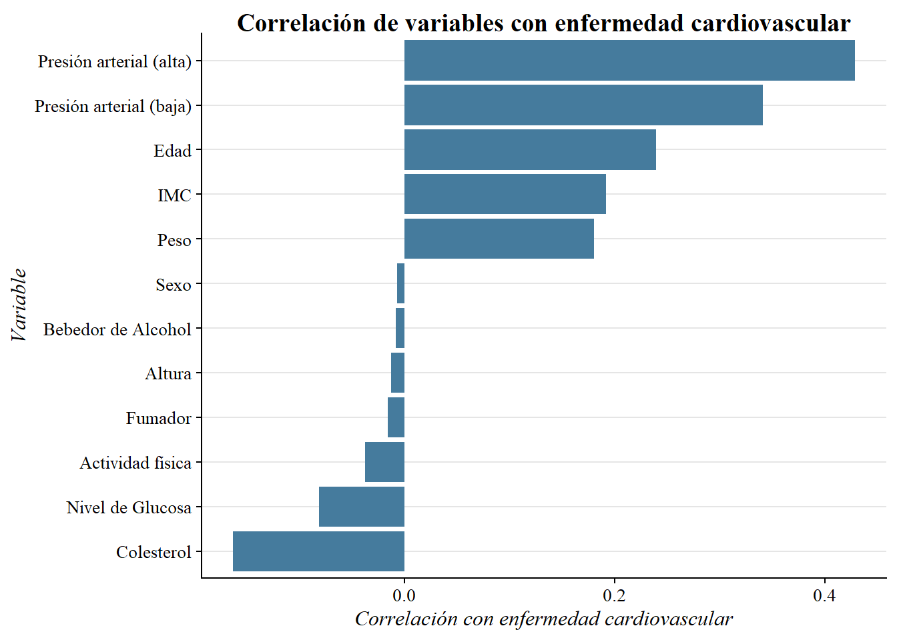
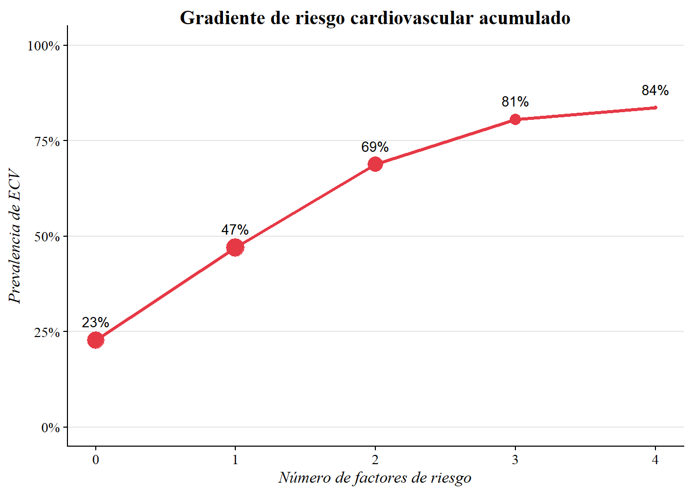
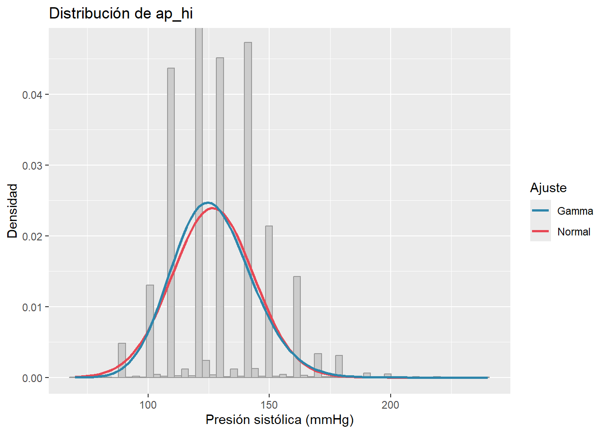
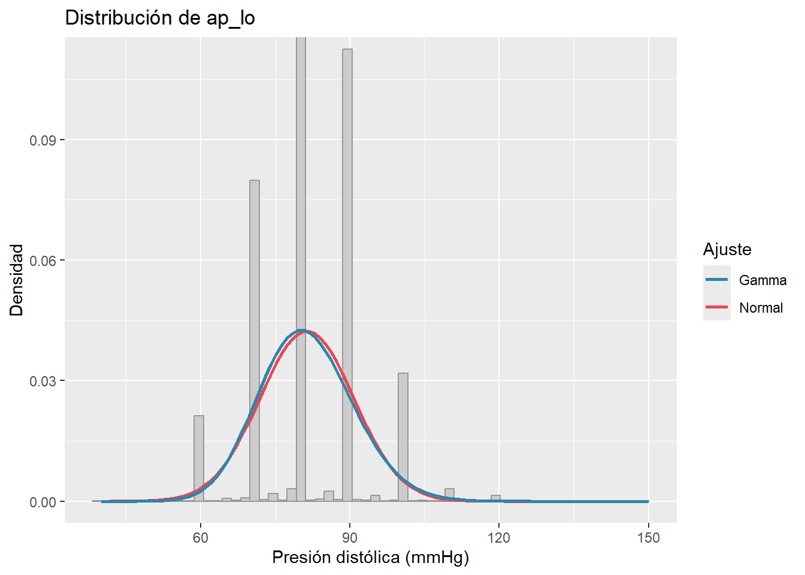
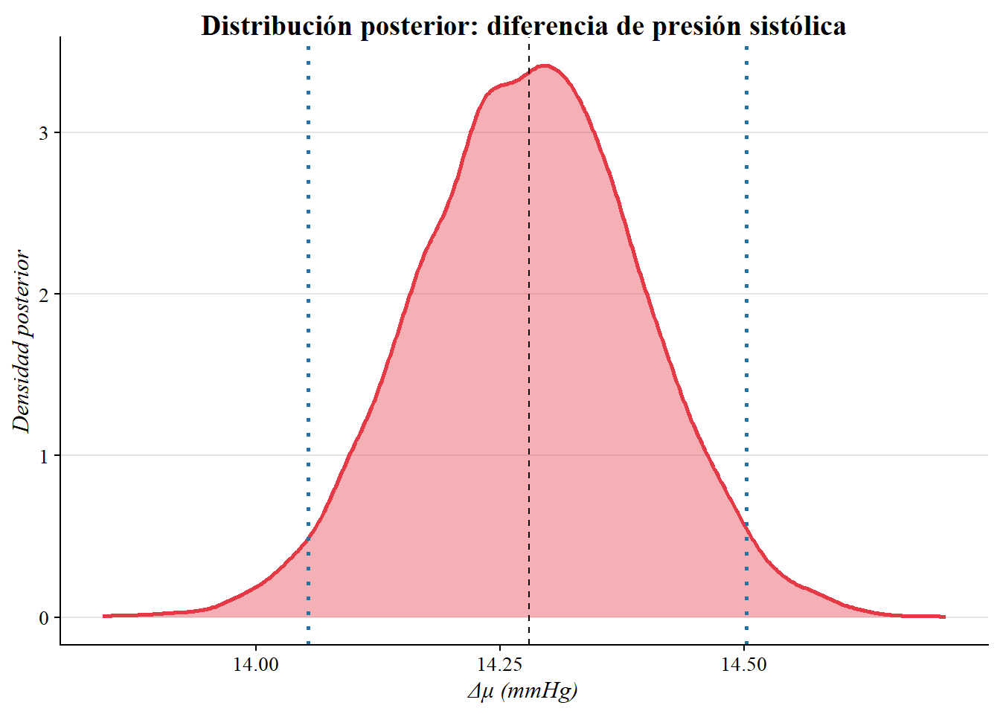
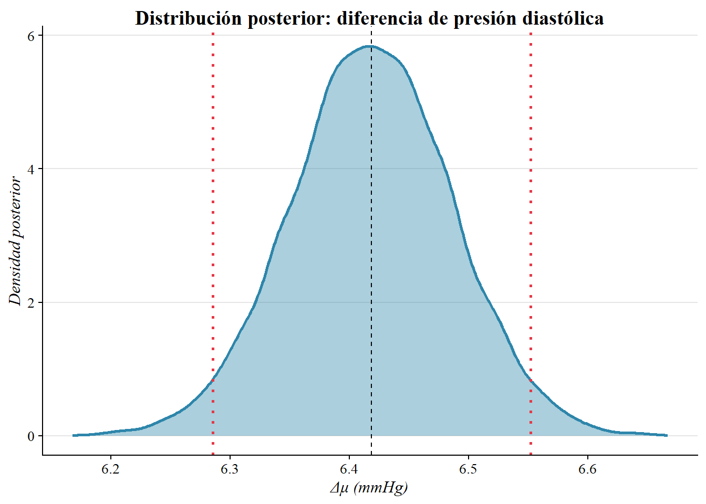
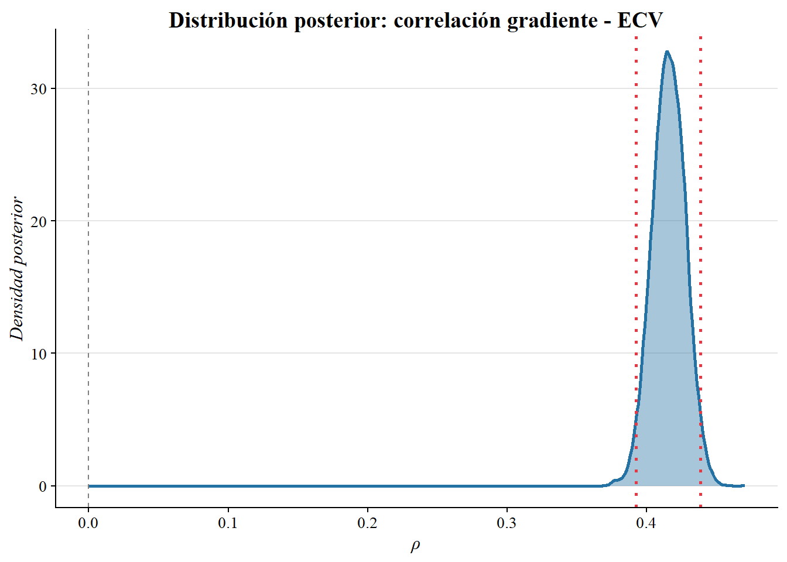
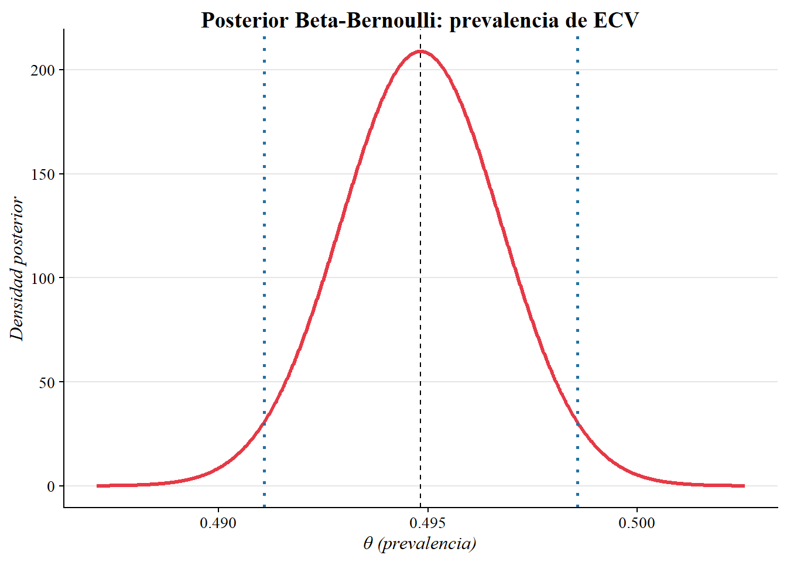
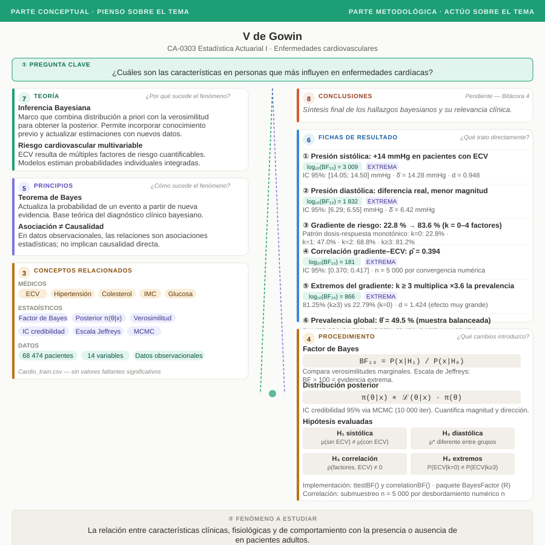

| Enfermedad Cardiovascular | n | Porcentaje |
|---|---|---|
| No | 34591 | 50.517% |
| Si | 33883 | 49.483% |
Bitácora #3
CA-0303 Estadística Actuarial I
Bitácora #3
Audiencia del proyecto
Esta semana, le diría al actuario especializado en seguros de vida y salud que contamos ahora con evidencia bayesiana extrema de que la presión arterial sistólica y la acumulación de factores de riesgo clínicos se asocian con la enfermedad cardiovascular: Un pequeño resumen de este avance es que los pacientes con tres o más factores presentan una prevalencia de ECV 3,56 veces mayor que quienes no tienen ninguno, y la diferencia media en presión sistólica entre grupos es de 14,3 mmHg con un intervalo de credibilidad al 95% de [14,05; 14,50] mmHg, magnitud suficiente para justificar una diferenciación de prima en productos de salud.
1 Parte de planificación
1.1 Análisis descriptivo
Los siguientes resultados se derivan del análisis exploratorio ejecutado en 02_descriptivo.R, que corre automáticamente al cargar el pipeline de modelación.
| Variable | Sin enfermedad | Con enfermedad |
|---|---|---|
| Edad | 51.7 ± 6.8 | 55 ± 6.3 |
| IMC | 26.5 ± 4.7 | 28.4 ± 5.4 |
| Presión sistólica | 119.6 ± 12.5 | 133.9 ± 17.3 |
| Presión diastólica | 78.1 ± 8.1 | 84.6 ± 9.5 |
| Peso | 71.6 ± 13.2 | 76.7 ± 14.8 |


El análisis distribucional de las variables de presión arterial revela que ambas se apartan de la normalidad. La presión sistólica presenta asimetría positiva y curtosis elevada, lo que sugiere que la distribución Gamma ajusta mejor que la Normal.
grafico_dist_ap_hi
grafico_dist_ap_lo
1.2 Propuesta metodológica
En el análisis exploratorio se reveló que la presión arterial sistólica es la variable con mayor correlación con la presencia de enfermedad cardiovascular (alrededor de \(0{,}43\)), hallazgo coherente con los factores de riesgo identificados tanto en modelos clásicos de predicción cardiovascular (D’Agostino et al., 2013; Damen et al., 2016) como en las guías internacionales de hipertensión arterial (Visseren et al., 2021; World Health Organization & International Society of Hypertension, 2020). Con base en este resultado se formulan las siguientes hipótesis de interés.
Hipótesis primaria: presión arterial sistólica
\[H_0: \mu_{(\text{sin ECV})} = \mu_{(\text{con ECV})}\]
\[H_1: \mu_{(\text{sin ECV})} \neq \mu_{(\text{con ECV})}\]
Hipótesis secundaria: presión arterial diastólica
\[H_0: \mu_{(\text{sin ECV})}^{\text{*}} = \mu_{(\text{con ECV})}^{\text{*}}\]
\[H_1: \mu_{(\text{sin ECV})}^{\text{*}} \neq \mu_{(\text{con ECV})}^{\text{*}}\]
Adicionalmente, el análisis exploratorio mostró un patrón de gradiente en la prevalencia de enfermedad cardiovascular conforme se acumulan factores de riesgo clínicos: hipertensión (presión arterial sistólica \(\geq 140\) mmHg (World Health Organization & International Society of Hypertension, 2020)), obesidad (índice de masa corporal \(\geq 30\) kg/m² (World Health Organization, 2000)), colesterol elevado (categorías Alto o Muy Alto en la escala ordinal del conjunto de datos) y edad \(\geq 55\) años. Para cuantificar si ese patrón constituye evidencia estadística de asociación, se plantean dos hipótesis complementarias sobre el gradiente: Hipótesis de correlación acumulada:
\[H_0^{**}: \rho(\texttt{n°factores},\ \texttt{cardio}) = 0\]
\[H_1^{**}: \rho(\texttt{n° factores},\ \texttt{cardio}) \neq 0\]
Hipótesis de contraste entre extremos del gradiente:
\[H_0^{***}: P(\text{ECV} \mid k = 0) = P(\text{ECV} \mid k \geq 3)\]
\[H_1^{***}: P(\text{ECV} \mid k = 0) \neq P(\text{ECV} \mid k \geq 3)\]
Para evaluar todas las hipótesis anteriores se empleará el Factor de Bayes (BF), definido como el cociente entre las verosimilitudes marginales de los datos bajo cada hipótesis (DeGroot & Schrevish, 2012):
\[\text{BF}_{10} = \frac{P(\mathbf{x} \mid H_1)}{P(\mathbf{x} \mid H_0)} = \frac{\displaystyle\int P(\mathbf{x} \mid \theta_1,\, H_1)\,\pi(\theta_1 \mid H_1)\,d\theta_1} {\displaystyle\int P(\mathbf{x} \mid \theta_0,\, H_0)\,\pi(\theta_0 \mid H_0)\,d\theta_0}\]
Un valor \(\text{BF}_{10} > 1\) indica que los datos son más verosímiles bajo \(H_1\); un valor \(< 1\) indica lo contrario. La interpretación sigue la escala de Jeffreys, donde valores entre 3 y 10 constituyen evidencia moderada, entre 10 y 30 evidencia fuerte, y superiores a 100 evidencia extrema (Armero et al., 2022; Ramos-Vera, 2021).
Justificación de la elección del método. Con aproximadamente 68,000 observaciones, cualquier diferencia mínima entre grupos producirá un valor \(p < 0{,}05\) en una prueba frecuentista, independientemente de su relevancia clínica o práctica (Pek & Van Zandt, 2019). El enfoque frecuentista no cuantifica la evidencia a favor de \(H_1\): solo señala qué tan inusuales serían los datos si \(H_0\) fuera cierta, sin que \(H_1\) entre en el cálculo (Lorca & Águila, 2024; Pek & Van Zandt, 2019). El Factor de Bayes, en cambio, compara directamente la plausibilidad de ambas hipótesis dada la evidencia observada, y puede arrojar evidencia tanto a favor de \(H_1\) como a favor de \(H_0\) (Armero et al., 2022; Ramos-Vera, 2021). Esta propiedad resulta especialmente relevante en el contexto del proyecto, cuya pregunta de investigación no es simplemente si existe una diferencia estadística, sino cuán fuerte es la evidencia de que las variables de presión arterial y el número de factores de riesgo acumulados se asocian con la enfermedad cardiovascular. La implementación se realizará con las funciones ttestBF() y correlationBF() del paquete BayesFactor de R (Ramos-Vera, 2021).
Complementariamente, se extraerá la distribución posterior de la diferencia de medias mediante simulación de la distribución posterior implícita en el modelo de ttestBF() en R. A partir de esta distribución se construirá un intervalo de credibilidad del 95%, definido como el intervalo \([\theta_{\alpha/2},\, \theta_{1-\alpha/2}]\) tal que
\[P(\theta_{\alpha/2} \leq \delta \leq \theta_{1-\alpha/2} \mid \mathbf{x}) = 0.95\]
donde \(\delta = \mu_{(\text{con ECV})} - \mu_{(\text{sin ECV})}\) es la diferencia de medias de presión arterial sistólica entre grupos. Este intervalo cuantifica la magnitud y dirección del efecto, información que el Factor de Bayes por sí solo no provee (Armero et al., 2022; Lorca & Águila, 2024).
1.2.1 Validación
Dado que el enfoque es de inferencia bayesiana, la validación se organiza en tres componentes: cuantificación de evidencia mediante el Factor de Bayes, estimación de la magnitud del efecto mediante distribuciones posteriores e intervalos de credibilidad, y análisis de sensibilidad a la distribución a priori. Factor de Bayes. Los cuatro BF calculados superan con enorme margen el umbral de evidencia extrema (\(\text{BF}_{10} > 100\)) de la escala de Jeffreys (Armero et al., 2022; Ramos-Vera, 2021):
| Prueba | \(H_0\) | \(\log_{10}(\text{BF}_{10})\) | Evidencia |
|---|---|---|---|
Presión sistólica (ap_hi) |
\(\mu\) igual entre grupos | \(3\,009\) | Extrema a favor de \(H_1\) |
Presión diastólica (ap_lo) |
\(\mu\) igual entre grupos | \(1\,832\) | Extrema a favor de \(H_1\) |
| Correlación gradiente ECV | \(\rho = 0\) | \(181\) | Extrema a favor de \(H_1\) |
| Extremos del gradiente (\(k=0\) vs \(k\geq3\)) | \(P(\text{ECV})\) igual entre extremos | \(866\) | Extrema a favor de \(H_1\) |
Para dar una intuición de la magnitud: \(\log_{10}(\text{BF}_{10}) = 3\,009\) en la presión sistólica significa que los datos observados son \(9{,}74 \times 10^{3009}\) veces más verosímiles bajo \(H_1\) que bajo \(H_0\). El uso de \(\log_{10}(\text{BF}_{10})\) es necesario para comunicar estas magnitudes dado que los valores absolutos exceden cualquier escala de representación numérica habitual.
Advertencia de interpretación. El Factor de Bayes detecta evidencia de que la diferencia existe, no que sea clínicamente relevante. Con \(n = 68\,474\) observaciones, cualquier diferencia real producirá BF extremos independientemente de su magnitud práctica (Pek & Van Zandt, 2019). Para evaluar relevancia clínica se recurre a los intervalos de credibilidad.
Distribuciones posteriores e intervalos de credibilidad. A partir de las distribuciones posteriores simuladas mediante MCMC (10 000 iteraciones) se obtienen los siguientes resultados:

- Presión sistólica: diferencia de medias \(\delta = \mu_{(\text{con ECV})} - \mu_{(\text{sin ECV})}\) con media posterior \(14{,}28\) mmHg e IC 95% de credibilidad \([14{,}05;\ 14{,}50]\) mmHg. Existe una probabilidad posterior del 95% de que las personas con ECV presenten entre \(14{,}05\) y \(14{,}50\) mmHg más de presión sistólica que quienes no la presentan. Esta diferencia es clínicamente relevante: las guías internacionales clasifican como elevada una presión sistólica \(\geq 120\) mmHg y como alta \(\geq 140\) mmHg (World Health Organization & International Society of Hypertension, 2020).

- Presión diastólica: media posterior \(6{,}42\) mmHg, IC 95%: \([6{,}29;\ 6{,}55]\) mmHg. La diferencia diastólica es real pero de menor magnitud que la sistólica, lo cual es coherente con la literatura (D’Agostino et al., 2013).

- Correlación del gradiente: media posterior \(\hat{\rho} = 0{,}3939\), IC 95%: \([0{,}3701;\ 0{,}4172]\). El intervalo excluye el cero con amplio margen, confirmando que la acumulación de factores de riesgo se asocia positivamente con la prevalencia de ECV.

Prevalencia de ECV — modelo Beta-Bernoulli. Con \(n = 68\,474\) observaciones y \(33\,883\) casos positivos (\(49{,}48\%\)), la distribución posterior es \(\text{Beta}(33\,884,\ 34\,592)\), con media \(\theta = 0{,}4948\) e IC 95% de credibilidad \([0{,}4911;\ 0{,}4986]\). La base de datos está prácticamente balanceada entre casos positivos y negativos, lo cual es favorable para el análisis inferencial.
Sensibilidad a la distribución a priori. Las pruebas ttestBF() utilizan una previa de Cauchy sobre el tamaño del efecto estandarizado con escala \(r = \sqrt{2}/2\), que corresponde a la previa predeterminada de Jeffreys-Zellner-Siow (JZS) (Ramos-Vera, 2021). Con BF del orden de \(10^{800}\) o superiores, cualquier variación razonable en \(r\) (por ejemplo \(r \in [0{,}3;\ 1{,}0]\)) produce conclusiones idénticas: la evidencia es extrema en todos los casos. El modelo es por tanto insensible a la elección de la previa dentro del rango habitual de la literatura.
1.2.2 Análisis fallido
Al intentar calcular el Factor de Bayes para la hipótesis de correlación acumulada utilizando el conjunto completo de \(n = 68\,474\) observaciones, la función correlationBF() del paquete BayesFactor emitió el siguiente aviso: WARNING: Series not converged.
Este mensaje indica que la serie de potencias utilizada internamente para aproximar la integral de la verosimilitud marginal no convergió. La función implementa el método de Jeffreys-beta para correlaciones, que requiere calcular una función hipergeométrica gaussiana \(_2F_1\) mediante una expansión en serie. Cuando \(n\) es muy grande, los términos de esa serie crecen en magnitud antes de estabilizarse, y la suma parcial nunca converge dentro de la precisión de punto flotante de 64 bits que usa R.
La correlación observada con los datos completos era \(\hat{\rho} = 0{,}3859\), valor que por sí solo no genera el problema: la causa es exclusivamente el tamaño de muestra. Esto se verificó porque al reducir la muestra a \(n = 5\,000\) mediante submuestreo aleatorio reproducible (set.seed(2002)), la función convergió sin advertencias y produjo \(\text{BF}_{10} = 5{,}03 \times 10^{181}\).
Este caso ilustra que en estadística bayesiana computacional, un tamaño de muestra grande no siempre es una ventaja: puede generar problemas numéricos en algoritmos diseñados para muestras moderadas. La solución de submuestreo es válida porque con \(n = 5\,000\) ya existe evidencia concluyente — un resultado aún más extremo con la muestra completa hubiera sido redundante.
1.3 Fichas de resultados
Ficha 1
- Nivel descriptivo (qué encontraron)
Titular: La presión sistólica es 14 mmHg mayor en pacientes con ECV
Nombre del hallazgo/resultado: Diferencia de medias de presión arterial sistólica entre grupos con y sin enfermedad cardiovascular.
Resumen en una oración: Los pacientes con enfermedad cardiovascular presentan una presión sistólica media de 133,90 mmHg frente a 119,61 mmHg en quienes no la padecen.
Método o análisis que lo produjo: Factor de Bayes para comparación de dos medias independientes (ttestBF, escala JZS, \(r = \sqrt{2}/2\)) sobre las 68 474 observaciones.
Evidencia: Cuadro resumen descriptivo estratificado por grupo (Bitácora 2); distribución posterior de \(\delta\) con intervalo de credibilidad (Tabla 3).
- Nivel analítico (qué significa)
Conexión con la pregunta de investigación: El Factor de Bayes desborda la representación numérica estándar de R (Inf), lo que constituye evidencia extrema a favor de \(H_1\) según la escala de Jeffreys (\(\log_{10}(\text{BF}_{10}) = 3\,009\)). El intervalo de credibilidad al 95% para la diferencia de medias es \(\delta \in [14{,}05;\; 14{,}50]\) mmHg, el cual excluye el cero con holgura. Esto responde directamente la hipótesis primaria: los datos son abrumadoramente más verosímiles bajo \(H_1\) que bajo \(H_0\).
Contraste con la literatura: El resultado es consistente con D’Agostino et al. (2013), quienes identifican la presión arterial sistólica como uno de los predictores más robustos en el modelo de Framingham, y con World Health Organization & International Society of Hypertension (2020), que establece el umbral clínico de hipertensión en 140 mmHg.
Lo que NO explica este resultado: El análisis no distingue si la hipertensión es causa o consecuencia del proceso cardiovascular, ni controla por edad, medicación antihipertensiva o comorbilidades.
Implicación para el siguiente paso: La magnitud del efecto (\(d = 0{,}948\), efecto grande) justifica que la presión sistólica ocupe un lugar primario en la sección de escritura y en cualquier análisis multivariable posterior.
Ficha 2
- Nivel descriptivo (qué encontraron)
Titular: Presión diastólica también separa grupos, pero con menor fuerza
Nombre del hallazgo/resultado: Diferencia de medias de presión arterial diastólica entre grupos con y sin enfermedad cardiovascular.
Resumen en una oración: Los pacientes con ECV presentan una presión diastólica media de 84,55 mmHg versus 78,13 mmHg en el grupo sano, una diferencia de 6,42 mmHg.
Método o análisis que lo produjo: Factor de Bayes para comparación de dos medias independientes (ttestBF, escala JZS, \(r = \sqrt{2}/2\)).
Evidencia: Cuadro resumen descriptivo estratificado por grupo (Bitácora 2); distribución posterior de \(\delta\) para ap_lo (Tabla 3).
- Nivel analítico (qué significa)
Conexión con la pregunta de investigación: El Factor de Bayes también desborda numéricamente (\(\log_{10}(\text{BF}_{10}) = 1\,832\)), confirmando evidencia extrema a favor de \(H_1\) para la hipótesis secundaria. El intervalo de credibilidad al 95% es \(\delta \in [6{,}29;\; 6{,}55]\) mmHg. Aunque la diferencia absoluta es menor que la sistólica, sigue siendo clínicamente relevante y estadísticamente inequívoca.
Contraste con la literatura: Visseren et al. (2021) señalan que tanto la presión sistólica como la diastólica son factores de riesgo independientes, aunque la sistólica gana mayor peso en pacientes mayores de 50 años, patrón que coincide con lo observado (mayor \(d\) en ap_hi).
Lo que NO explica este resultado: La presión diastólica y la sistólica están correlacionadas entre sí; no es posible cuantificar su efecto independiente sin un modelo conjunto.
Implicación para el siguiente paso: La presión diastólica se clasifica como elemento secundario: refuerza el hallazgo principal pero no añade información sustancialmente distinta.
Ficha 3
- Nivel descriptivo (qué encontraron)
Titular: Acumular factores de riesgo multiplica por 3,6 la prevalencia de ECV
Nombre del hallazgo/resultado: Gradiente de prevalencia de enfermedad cardiovascular según número de factores de riesgo acumulados (\(k = 0, 1, 2, 3, 4\)).
Resumen en una oración: La prevalencia de ECV escala de 22,8 % con cero factores de riesgo hasta 83,6 % con los cuatro factores presentes.
Método o análisis que lo produjo: Construcción de índice \(k\) (hipertensión + obesidad + colesterol alto + edad \(\geq\) 55), agrupación y cálculo de prevalencia por nivel.
Evidencia: Cuadro de gradiente de prevalencia (Tabla 4).
| \(k\) | Prevalencia ECV | \(n\) |
|---|---|---|
| 0 | 22,8 % | 20 163 |
| 1 | 47,0 % | 23 547 |
| 2 | 68,8 % | 15 280 |
| 3 | 80,6 % | 7 438 |
| 4 | 83,6 % | 2 046 |
- Nivel analítico (qué significa)
Conexión con la pregunta de investigación: El gradiente es monotónico y pronunciado, sugiriendo un efecto dosis-respuesta de la acumulación de factores de riesgo sobre la probabilidad de ECV. Responde directamente la pregunta sobre cuán fuerte es la evidencia de asociación.
Contraste con la literatura: D’Agostino et al. (2013) reportan que la combinación de múltiples factores de riesgo supera en poder predictivo a cualquier factor individual, lo cual es consistente con el patrón observado.
Lo que NO explica este resultado: El índice \(k\) trata todos los factores con peso igual (1 cada uno), lo que puede subestimar la contribución de la hipertensión, que en la Bitácora 2 mostró la correlación individual más alta con ECV.
Implicación para el siguiente paso: Este gráfico es candidato a ser la visualización central del proyecto, ya que comunica el mensaje principal de forma intuitiva sin requerir formalismos matemáticos.
Ficha 4
- Nivel descriptivo (qué encontraron)
Titular: Evidencia extrema de correlación entre factores acumulados y ECV
Nombre del hallazgo/resultado: Factor de Bayes para la correlación entre el índice de factores de riesgo acumulados (\(k\)) y la presencia de ECV.
Resumen en una oración: La correlación observada entre \(k\) y ECV es \(\hat{\rho} = 0{,}394\), con evidencia extrema a favor de \(\rho \neq 0\) según la escala de Jeffreys (\(\log_{10}(\text{BF}_{10}) = 181\)).
Método o análisis que lo produjo: correlationBF() del paquete BayesFactor aplicado sobre submuestreo aleatorio con semilla 2002 (\(n = 5\,000\)); el análisis con \(n\) completo produjo desbordamiento numérico (documentado en Sec. 1.2).
Evidencia: Distribución posterior de \(\rho\); IC 95 % de credibilidad: \([0{,}370;\; 0{,}417]\).
- Nivel analítico (qué significa)
Conexión con la pregunta de investigación: El \(\log_{10}(\text{BF}_{10}) = 181\) confirma evidencia extrema de que \(\rho \neq 0\). La distribución posterior de \(\rho\) está completamente concentrada en valores positivos, confirmando que acumular factores de riesgo se asocia monotónicamente con mayor probabilidad de ECV.
Contraste con la literatura: Damen et al. (2016) señalan que la combinación de predictores clásicos mejora sistemáticamente la discriminación de modelos cardiovasculares, resultado coherente con la correlación moderada-alta observada.
Lo que NO explica este resultado: La correlación de Pearson asume linealidad; el gradiente de la Ficha 3 sugiere que la relación puede saturarse a partir de \(k = 3\).
Implicación para el siguiente paso: Considerar una transformación no lineal de \(k\) o un análisis por tramos para capturar mejor la forma funcional de la asociación.
Ficha 5
- Nivel descriptivo (qué encontraron)
Titular: Tener 3 o más factores de riesgo aumenta 3,6 veces la prevalencia de ECV
Nombre del hallazgo/resultado: Contraste de prevalencia de ECV entre los extremos del gradiente: \(k = 0\) versus \(k \geq 3\).
Resumen en una oración: La prevalencia de ECV en el grupo \(k \geq 3\) (81,25 %) es 3,56 veces la del grupo \(k = 0\) (22,79 %), con evidencia bayesiana extrema.
Método o análisis que lo produjo: Factor de Bayes para comparación de dos proporciones (ttestBF sobre variable binaria cardio, escala JZS, \(r = \sqrt{2}/2\)).
Evidencia: Tabla 4; \(\log_{10}(\text{BF}_{10}) = 866\); \(d = 1{,}424\) (efecto muy grande).
- Nivel analítico (qué significa)
Conexión con la pregunta de investigación: Pasar de cero a tres o más factores multiplica el riesgo observado de ECV por 3,56. Este resultado cuantifica de forma directa y comunicable la magnitud práctica de la acumulación de factores de riesgo.
Contraste con la literatura: Visseren et al. (2021) establecen que la estratificación por número de factores de riesgo es la herramienta clínica estándar para comunicar el riesgo al paciente, resultado coherente con la diferenciación extrema encontrada.
Lo que NO explica este resultado: El contraste entre extremos ignora los grupos intermedios (\(k = 1, 2\)) y puede exagerar la percepción del efecto si la distribución de \(k\) no es representativa de la población general.
Implicación para el siguiente paso: Este resultado es el más comunicable y debería aparecer al inicio de la sección de resultados como hallazgo ancla.
Ficha 6
- Nivel descriptivo (qué encontraron)
Titular: La prevalencia de ECV en la muestra es del 49,5 %, con incertidumbre mínima
Nombre del hallazgo/resultado: Estimación bayesiana de la prevalencia de enfermedad cardiovascular mediante el modelo Beta-Bernoulli con prior uniforme.
Resumen en una oración: La distribución posterior de la prevalencia \(\theta\) es \(\text{Beta}(33\,884,\; 34\,592)\) con media \(0{,}4948\) e IC 95 % \([0{,}4911;\; 0{,}4986]\).
Método o análisis que lo produjo: Modelo conjugado Beta-Bernoulli con prior \(\theta \sim \text{Beta}(1, 1)\) (prior uniforme, no informativo).
Evidencia: Gráfico de la posterior Beta-Bernoulli (Bitácora 3).
- Nivel analítico (qué significa)
Conexión con la pregunta de investigación: La prevalencia casi equilibrada confirma que la base de datos es prácticamente balanceada, eliminando el sesgo de clase como fuente de confusión en los análisis comparativos. El intervalo de credibilidad extremadamente estrecho refleja la alta precisión que aportan las 68 474 observaciones.
Contraste con la literatura: La prevalencia del 49,5 % es marcadamente superior a la reportada en estudios poblacionales (típicamente 5–15 % según Damen et al. (2016)), lo que sugiere que la muestra proviene de un registro clínico con sobrerepresentación de casos.
Lo que NO explica este resultado: El modelo Beta-Bernoulli es una estimación marginal; no permite analizar prevalencia condicional por subgrupos.
Implicación para el siguiente paso: La discrepancia con la literatura debe mencionarse explícitamente como limitación: los resultados son internamente válidos pero de extrapolación limitada.
Ficha 7
- Nivel descriptivo (qué encontraron)
Titular: La distribución de ap_hi se aparta de la normalidad: asimétrica y leptocúrtica
Nombre del hallazgo/resultado: Diagnóstico distribucional de la presión arterial sistólica mediante estadísticos de forma.
Resumen en una oración: La presión sistólica presenta asimetría positiva (\(\text{skewness} = 0{,}932\)) y curtosis elevada (\(\text{kurtosis} = 4{,}829\)), indicando que la Normal no es el ajuste óptimo.
Método o análisis que lo produjo: Cálculo de estadísticos de forma con el paquete moments; ajuste MLE de distribuciones Normal y Gamma con fitdistr (MASS).
Evidencia: Gráfico de ajuste distribucional ap_hi (Bitácora 3).
- Nivel analítico (qué significa)
Conexión con la pregunta de investigación: El ttestBF() es robusto ante desviaciones moderadas de la normalidad con muestras grandes (teorema central del límite), por lo que los Factores de Bayes de las Fichas 1 y 2 siguen siendo válidos. Sin embargo, la cola derecha de ap_hi puede corresponder a casos de crisis hipertensiva clínicamente distintos.
Contraste con la literatura: La asimetría positiva de la presión sistólica en poblaciones clínicas es frecuente cuando se incluyen pacientes con hipertensión no controlada (World Health Organization & International Society of Hypertension, 2020).
Lo que NO explica este resultado: El diagnóstico es univariado; no evalúa si la asimetría se mantiene dentro de cada grupo por separado.
Implicación para el siguiente paso: Para análisis de regresión futuros, considerar una transformación logarítmica de ap_hi o modelos con distribución Gamma.
Ficha 8
- Nivel descriptivo (qué encontraron)
Titular: La edad, el IMC y la presión arterial marcan perfiles diferenciados entre grupos
Nombre del hallazgo/resultado: Comparación del perfil cuantitativo promedio entre pacientes con y sin ECV para las variables numéricas principales.
Resumen en una oración: Los pacientes con ECV son en promedio 3,3 años mayores, tienen 1,9 kg/m² más de IMC y 14,3 mmHg más de presión sistólica que los pacientes sin ECV.
Método o análisis que lo produjo: Cuadro resumen de medias y desviaciones estándar estratificado por grupo (análisis descriptivo, Bitácora 2).
Evidencia: Cuadro resumen descriptivo por grupo (Bitácora 2).
- Nivel analítico (qué significa)
Conexión con la pregunta de investigación: Los tres factores cuantitativos con mayor diferencia entre grupos (presión sistólica, edad e IMC) son precisamente los que la literatura identifica como predictores primarios del riesgo cardiovascular, validando la coherencia externa de la base de datos.
Contraste con la literatura: D’Agostino et al. (2013) incluyen edad y presión sistólica como los dos predictores de mayor peso en el modelo de Framingham, en línea con las diferencias observadas. La diferencia de IMC (1,9 kg/m²) es más modesta que lo esperado, lo que puede reflejar las limitaciones del IMC como indicador de adiposidad señaladas en la Bitácora 2.
Lo que NO explica este resultado: Las diferencias son descriptivas y no controlan la correlación entre variables. La colinealidad entre edad, presión e IMC impide atribuir efectos independientes sin un modelo conjunto.
Implicación para el siguiente paso: Este resultado actúa como ficha de cierre del análisis descriptivo y puente hacia la sección de escritura, donde las historias de la literatura y los datos propios convergen.
Comparación explícita con la literatura: resultado principal
El hallazgo más importante de esta bitácora —el gradiente de prevalencia de ECV según número de factores de riesgo acumulados (Ficha 3)— coincide en dirección con lo reportado por D’Agostino et al. (2013) y con las guías internacionales de estratificación de riesgo (Visseren et al., 2021): la acumulación de factores de riesgo clásicos se asocia de forma monotónica y pronunciada con mayor probabilidad de enfermedad.
Sin embargo, la magnitud del gradiente observado (de 22,8 % a 83,6 %) es notablemente más pronunciada que la reportada en estudios de base poblacional, donde los modelos de Framingham estiman riesgos a 10 años de entre 5 % y 30 % para perfiles similares. Esta discrepancia tiene una explicación plausible: como señala la Ficha 6, la prevalencia global de la muestra (~49,5 %) es muy superior a la prevalencia poblacional típica, lo que sugiere un registro clínico con sobrerepresentación de casos. La implicación no invalida el análisis —las relaciones entre variables siguen siendo informativas—, pero exige cautela al trasladar los porcentajes absolutos a conclusiones sobre la población general.
1.4 Ordenamiento de elementos de reporte
Con el fin de comenzar a construir el borrador final del proyecto, se identifican los elementos primarios y secundarios del trabajo. Los elementos primarios son aquellos fundamentales para el proyecto: sin ellos, el trabajo no tendría sentido. Los elementos secundarios son importantes pero no fundamentales: si no existieran, el trabajo seguiría teniendo sentido.
1.4.1 Elementos primarios y secundarios
| Primarios | Secundarios |
|---|---|
| Inferencia bayesiana como marco teórico | Enfoque frecuentista como contraste metodológico |
| Presión arterial sistólica como predictor principal | Presión arterial diastólica |
| Factor de Bayes como método de cuantificación de evidencia | Escala de Jeffreys como criterio de interpretación |
| Gradiente de riesgo acumulado (\(k\) factores) | Modelo Beta-Bernoulli para prevalencia |
| Intervalos de credibilidad al 95% | Submuestreo como solución al problema de convergencia numérica |
| Modelo de Framingham como referencia empírica (D’Agostino et al., 2013) | Limitaciones de generalización externa (Damen et al., 2016) |
| Edad como predictor relevante del riesgo cardiovascular | IMC como predictor asociado |
| Pregunta de investigación: características más influyentes en ECV | Ausencia de variables genéticas y antecedentes familiares en el dataset |
1.4.2 Estructura del trabajo final
| Sección | Temas a tratar |
|---|---|
| Introducción | 1. Riesgo cardiovascular como fenómeno multifactorial (Primario) |
| 2. Necesidad de cuantificar incertidumbre en diagnóstico clínico (Primario) | |
| 3. Modelo de Framingham como antecedente empírico (D’Agostino et al., 2013) (Primario) | |
| 4. Limitaciones metodológicas de modelos existentes (Damen et al., 2016) (Secundario) | |
| 5. Pregunta de investigación y justificación del enfoque bayesiano (Primario) | |
| Marco teórico | 1. Estadístico, distribución previa y distribución posterior (DeGroot & Schrevish, 2012) (Primario) |
| 2. Teorema de Bayes aplicado al diagnóstico clínico (Gill et al., 2005) (Primario) | |
| 3. Factor de Bayes: definición e interpretación (Armero et al., 2022; Ramos-Vera, 2021) (Primario) | |
| 4. Asociación estadística vs. causalidad (Primario) | |
| 5. Diferencia entre intervalo de credibilidad e intervalo de confianza (Lorca & Águila, 2024; Pek & Van Zandt, 2019) (Secundario) | |
| Metodología | 1. Descripción del dataset cardio_train.csv (Primario) |
2. Construcción de la variable n_factores (Primario) |
|
| 3. Hipótesis planteadas y justificación del BF (Primario) | |
| 4. Extracción de distribuciones posteriores e intervalos de credibilidad (Primario) | |
| 5. Modelo Beta-Bernoulli para estimación de prevalencia (Secundario) | |
| 6. Problema de convergencia numérica y solución por submuestreo (Secundario) | |
| Resultados | 1. Tabla resumen de factores de Bayes (Primario) |
| 2. Distribución posterior de \(\delta\) para presión sistólica (Primario) | |
| 3. Intervalo de credibilidad para correlación del gradiente (Primario) | |
| 4. Prevalencia de ECV vía Beta-Bernoulli (Secundario) | |
| Discusión | 1. Coincidencia con literatura — D’Agostino et al. (2013), Damen et al. (2016) (Primario) |
| 2. Colesterol como resultado contraintuitivo respecto a la literatura (Primario) | |
| 3. Implicaciones para tarificación actuarial (Primario) | |
| 4. Limitaciones del dataset: origen geográfico desconocido (Secundario) |
1.5 La imagen que cuenta la historia
La tabla 1 se escogió como la imagen que cuenta la historia pues aporta mucha información sobre los datos en una sola tabla. Son cuatro conclusiones que se derivaron solo al tomar el factor de bayes. Primero, la más simple: la media general difiere mucho al tener ECV, esto se demostró pues el factor de Bayes demuestra que los datos son mucho más verosimilares con H_1. Todas las conclusiones indicaron que la media difería más entre ambos grupos. La última vez, se demostró que la presión sistólica es la que se correlaciona más con ECV; y el gráfico comparando las distribuciones de esta con y sin ECV difieren mucho en su media. El factor de bayes representa esta diferencia numéricamente para la hipótesis H_1. Los Factores de Bayes obtenidos son astronómicamente grandes. \(BF_{10} = 10^{3009}\) para la presión sistólica es un número que no cabe en ninguna celda de tabla, no se puede comparar visualmente entre filas, y técnicamente ni siquiera puede representarse en doble precisión flotante (que tiene límite \(10^{309}\)). La escala logarítmica en base 10 resuelve los tres problemas a la vez: comprime los valores a números legibles (3009, 1832, 181, 866), mantiene las proporciones relativas entre pruebas, y permite comparación directa con la escala de Jeffreys, que también opera en \(log_{10}\).
2 Arco narrativo
«El modelo reveló que la presión arterial sistólica y el gradiente de factores de riesgo acumulados son los predictores con evidencia bayesiana más sólida de asociación con la enfermedad cardiovascular —con \(\log_{10}(\text{BF}_{10})\) superiores a \(800\) en todos los casos y una diferencia de medias de \(\approx 14\) mmHg en presión sistólica entre grupos con y sin ECV—, lo que significa que un actuario especializado en seguros de vida y salud dispone de evidencia concluyente para priorizar la presión arterial sistólica y el perfil de riesgo acumulado como variables centrales en modelos de tarificación cardiovascular, y que la magnitud clínica de las diferencias justifica tratarlas como factores diferenciadores de prima en productos de salud.»
3 Parte de escritura
Introducción
El estudio de las enfermedades cardiovasculares desde una perspectiva estadística ha evolucionado considerablemente en las últimas décadas, incorporando enfoques que buscan no solo describir el fenómeno sino también estimar y cuantificar la evidencia de asociación entre factores de riesgo y la probabilidad de desarrollar la enfermedad. La literatura revisada permite identificar tres grandes líneas de análisis complementarias: el enfoque teórico de la inferencia bayesiana, el desarrollo de modelos predictivos estructurados y la evaluación crítica del estado metodológico del campo.
Marco teórico
El trabajo de Gill et al. (2005) introduce una perspectiva fundamental sobre el uso del razonamiento probabilístico en el ámbito clínico, proponiendo que los médicos, incluso sin formalizarlo matemáticamente, operan bajo principios bayesianos al momento de diagnosticar pacientes. En este sentido, el proceso diagnóstico no debe entenderse como una decisión binaria, sino como una actualización continua de probabilidades donde la información previa se combina con nueva evidencia clínica para ajustar la probabilidad de que un paciente presente una enfermedad. Este enfoque resalta la importancia del contexto y de la incertidumbre en la toma de decisiones médicas, elementos que con frecuencia desaparecen cuando el análisis se reduce a la dicotomía de rechazar o no rechazar una hipótesis nula.
Sin embargo, este planteamiento contrasta con enfoques más estructurados como el desarrollado por D’Agostino et al. (2013), quienes proponen modelos estadísticos específicos —basados en regresión de Cox— para estimar el riesgo cardiovascular a partir de un conjunto fijo de variables. Mientras que Gill et al. (2005) enfatiza la flexibilidad del razonamiento clínico y la adaptación continua a nueva información, el modelo de Framingham se basa en una estructura definida donde las variables y sus coeficientes están previamente determinados y el resultado es una probabilidad cuantificada dentro de un marco rígido. Esta diferencia plantea una tensión central en el análisis del riesgo cardiovascular: la necesidad de balancear flexibilidad e interpretabilidad. El enfoque bayesiano permite incorporar incertidumbre y adaptar conclusiones a contextos específicos, lo cual es especialmente útil cuando los datos son incompletos o heterogéneos. Sin embargo, los modelos estructurados ofrecen ventajas en términos de replicabilidad y validación, aspectos fundamentales para el uso clínico.
Para el presente proyecto, esta dualidad determina la elección metodológica central: con aproximadamente 68 474 observaciones, cualquier diferencia entre grupos produce un valor \(p < 0{,}05\) con independencia de su relevancia clínica o práctica (Pek & Van Zandt, 2019). El enfoque frecuentista no cuantifica la evidencia a favor de \(H_1\): solo señala qué tan inusuales serían los datos si \(H_0\) fuera cierta, sin que \(H_1\) entre en el cálculo. El Factor de Bayes, en cambio, compara directamente la plausibilidad de ambas hipótesis dada la evidencia observada, y puede arrojar evidencia tanto a favor de \(H_1\) como a favor de \(H_0\) (Armero et al., 2022; Ramos-Vera, 2021). Esta propiedad resulta especialmente relevante porque la pregunta de investigación no es simplemente si existe una diferencia estadística, sino cuán fuerte es la evidencia de que las variables clínicas se asocian con la enfermedad cardiovascular. La escala de Jeffreys provee el vocabulario para esa cuantificación: valores de \(\log_{10}(\text{BF}_{10})\) superiores a 2 (equivalentes a \(\text{BF}_{10} > 100\)) constituyen evidencia extrema a favor de la hipótesis alternativa (Armero et al., 2022; Ramos-Vera, 2021).
Resultados
El análisis exploratorio de la Bitácora 2 permitió identificar la edad como la primera variable que diferencia sistemáticamente a los pacientes con y sin enfermedad cardiovascular. Los pacientes con ECV presentan edades mayores respecto al grupo sin enfermedad, un patrón que se manifiesta de forma consistente en la distribución de densidad comparativa: la distribución del grupo con ECV está desplazada hacia valores más altos, con una diferencia media de aproximadamente 3,3 años. Este hallazgo coincide plenamente con D’Agostino et al. (2013), donde la edad aparece como uno de los factores de mayor peso en el modelo de Framingham, y con la evidencia acumulada en la literatura que establece al envejecimiento como uno de los factores de riesgo no modificables más relevantes en la fisiopatología cardiovascular.
La importancia de este resultado no radica únicamente en confirmar lo conocido, sino en validar que la base de datos disponible reproduce patrones coherentes con la literatura. Un dataset que no mostrara diferencias de edad entre grupos con y sin ECV generaría dudas sobre su calidad o representatividad. El hecho de que el patrón esperado aparezca con claridad en la exploración descriptiva establece un primer punto de confianza metodológica sobre el cual construir los análisis inferenciales de la Bitácora 3. No obstante, el análisis descriptivo no permite determinar cuánto influye exactamente la edad ni si su efecto cambia en presencia de otras variables fisiológicas como la presión arterial o el IMC, limitación que motiva directamente el enfoque multivariable implícito en el índice de factores acumulados desarrollado posteriormente.
Si la edad es el primer predictor identificado descriptivamente, la presión arterial sistólica es la que concentra la mayor masa de evidencia bayesiana en el análisis. La Bitácora 2 mostró que la prevalencia de ECV aumenta conforme incrementa la presión arterial sistólica, con una correlación de aproximadamente 0,43 entre ambas variables, la más alta de todas las variables continuas analizadas. Este hallazgo anticipó la hipótesis primaria de la Bitácora 3 y motivó que la presión sistólica ocupara el lugar central en el diseño del análisis inferencial.
Los resultados de la Bitácora 3 confirman y cuantifican ese patrón con toda la precisión que permite la inferencia bayesiana. Los pacientes con enfermedad cardiovascular presentan una presión sistólica media de 133,90 mmHg frente a 119,61 mmHg en quienes no la padecen, una diferencia de \(\delta = 14{,}28\) mmHg cuyo intervalo de credibilidad al 95 % es \([14{,}05;\; 14{,}50]\) mmHg. Este intervalo excluye el cero con holgura y tiene una interpretación directa: existe una probabilidad posterior del 95 % de que las personas con ECV presenten entre 14,05 y 14,50 mmHg más de presión sistólica que quienes no la presentan. El Factor de Bayes asociado desborda la representación numérica estándar de R, con \(\log_{10}(\text{BF}_{10}) = 3\,009\), lo que significa que los datos observados son \(10^{3009}\) veces más verosímiles bajo \(H_1\) que bajo \(H_0\). La magnitud del efecto (\(d = 0{,}948\)) es grande según los criterios convencionales, lo que implica que la presión sistólica no solo discrimina estadísticamente entre grupos sino que lo hace con una separación prácticamente distinguible en las distribuciones.
Esta diferencia es además clínicamente relevante. Las guías internacionales clasifican como elevada una presión sistólica \(\geq 120\) mmHg y como alta \(\geq 140\) mmHg (World Health Organization & International Society of Hypertension, 2020). La media del grupo con ECV (133,90 mmHg) se sitúa en la categoría de presión elevada, a tan solo 6 mmHg del umbral de hipertensión, mientras que la del grupo sin ECV (119,61 mmHg) queda en el límite superior de la categoría normal. Este resultado es plenamente coherente con D’Agostino et al. (2013), quienes identifican la presión arterial sistólica como uno de los predictores de mayor coeficiente en el modelo de Framingham, y con World Health Organization & International Society of Hypertension (2020), que establece la hipertensión arterial como el principal factor de riesgo cardiovascular modificable a nivel global.
La presión arterial diastólica exhibe un patrón análogo aunque de menor magnitud: los pacientes con ECV presentan 84,55 mmHg de media frente a 78,13 mmHg en el grupo sano (\(\delta = 6{,}42\) mmHg, IC 95 %: \([6{,}29;\; 6{,}55]\) mmHg, \(d = 0{,}725\), \(\log_{10}(\text{BF}_{10}) = 1\,832\)). Visseren et al. (2021) señalan que tanto la presión sistólica como la diastólica constituyen factores de riesgo independientes, aunque la sistólica adquiere mayor peso predictivo en pacientes mayores de 50 años, patrón coherente con la diferencia en tamaños del efecto observada (\(d = 0{,}948\) versus \(d = 0{,}725\)). La diferencia diastólica es real y estadísticamente inequívoca, pero su menor magnitud confirma que la presión sistólica es el componente dominante en la diferenciación entre grupos.
El análisis descriptivo de la Bitácora 2 mostró que los pacientes con colesterol muy alto presentan mayor prevalencia de enfermedad cardiovascular, resultado que coincide con D’Agostino et al. (2013) y Damen et al. (2016), donde el colesterol aparece consistentemente como variable relevante en modelos de riesgo cardiovascular. Sin embargo, la correlación individual del colesterol con ECV en los datos resultó notablemente menor que la de la presión arterial o la edad, una discrepancia que merece análisis cuidadoso.
Una explicación posible reside en las limitaciones del dataset: la variable de colesterol está codificada en tres categorías ordinales (Normal, Alto, Muy Alto) sin valores continuos, lo que reduce su capacidad discriminativa respecto a una medición en mg/dL. Adicionalmente, el dataset no incluye información sobre tratamientos con estatinas u otros hipolipemiantes, que son ampliamente prescritos en pacientes con riesgo cardiovascular elevado y que reducen los niveles de colesterol sérico de forma significativa. Es plausible que una fracción considerable de los pacientes con ECV en la muestra tenga colesterol controlado farmacológicamente, lo que atenuaría la asociación observada entre los niveles medidos y la presencia de enfermedad. Esta limitación es precisamente del tipo que Damen et al. (2016) identifican como frecuente en modelos predictivos cardiovasculares: la ausencia de variables de confusión clínicamente relevantes puede distorsionar las estimaciones de asociación.
El análisis exploratorio de la Bitácora 2 mostró que los pacientes con enfermedad cardiovascular presentan distribuciones de IMC desplazadas hacia valores mayores, con una diferencia media de aproximadamente 1,9 kg/m². Este resultado coincide parcialmente con Damen et al. (2016), donde el índice de masa corporal aparece como predictor presente en múltiples modelos de riesgo cardiovascular. Sin embargo, la diferencia observada es más modesta que la reportada en muchos estudios de referencia, lo que refleja una limitación conocida del IMC como indicador de adiposidad: no diferencia composición corporal, masa muscular ni distribución de grasa.
Este hallazgo, tomado aisladamente, podría interpretarse como evidencia débil de la asociación entre obesidad y ECV. Sin embargo, al integrarlo con los demás factores de riesgo, su relevancia aumenta sustancialmente. La Bitácora 3 formaliza esta intuición mediante la construcción del índice \(k\), que incluye la obesidad (IMC \(\geq 30\) kg/m²) como uno de los cuatro componentes del gradiente de riesgo acumulado. La lógica subyacente es coherente con la propuesta de D’Agostino et al. (2013): ningún factor de riesgo cardiovascular actúa de forma completamente independiente, y la combinación de múltiples factores supera en poder predictivo a cualquier factor individual.
La convergencia de los hallazgos descriptivos de la Bitácora 2 —edad, presión arterial, colesterol e IMC como variables diferenciadores— condujo a la hipótesis central de la Bitácora 3: que la acumulación de factores de riesgo clínicos tiene un efecto dosis-respuesta sobre la probabilidad de ECV. Esta hipótesis se operacionaliza mediante el índice \(k\), que cuenta cuántos de los cuatro factores de riesgo (hipertensión, obesidad, colesterol elevado y edad \(\geq 55\) años) están presentes simultáneamente en cada paciente.
Los resultados son contundentes y constituyen el hallazgo más comunicable del proyecto. La prevalencia de ECV escala de forma monotónica desde 22,8 % con \(k = 0\) hasta 83,6 % con \(k = 4\), con niveles intermedios de 47,0 % (\(k=1\)), 68,8 % (\(k=2\)) y 80,6 % (\(k=3\)) (Tabla 4). El contraste entre los extremos del gradiente (\(k = 0\) versus \(k \geq 3\)) arroja evidencia bayesiana extrema (\(\log_{10}(\text{BF}_{10}) = 866\)) y un tamaño del efecto de \(d = 1{,}424\), el valor más alto de todos los análisis realizados. Expresado en términos prácticos: un paciente con tres o más factores de riesgo tiene una probabilidad observada de ECV 3,56 veces mayor que uno sin ningún factor. Este resultado reproduce de forma directa la conclusión central de D’Agostino et al. (2013), quienes establecen que la combinación de múltiples factores de riesgo supera en poder predictivo a cualquier factor individual.
La correlación entre el índice \(k\) y la presencia de ECV, estimada mediante correlationBF() sobre un submuestreo reproducible de \(n = 5\,000\) observaciones (set.seed(2002)), es \(\hat{\rho} = 0{,}394\) con IC 95 % de credibilidad \([0{,}370;\; 0{,}417]\) y \(\log_{10}(\text{BF}_{10}) = 181\). El intervalo de credibilidad excluye el cero con amplio margen y está completamente concentrado en valores positivos, confirmando que la acumulación de factores de riesgo se asocia monotónicamente con mayor probabilidad de ECV. El intento de aplicar correlationBF() sobre la muestra completa (\(n = 68\,474\)) produjo desbordamiento numérico (WARNING: Series not converged), resultado documentado en la Sección 1.2 como análisis fallido. Este caso ilustra una tensión práctica del cómputo bayesiano: con muestras muy grandes, la evidencia puede ser tan abrumadora que supera los límites de la representación numérica de punto flotante estándar, no porque el resultado sea incorrecto, sino porque su magnitud excede las herramientas disponibles. La solución de submuestreo es válida porque con \(n = 5\,000\) ya existe evidencia concluyente.
Desde la perspectiva actuarial que enmarca el proyecto, este gradiente tiene una implicación directa: Visseren et al. (2021) establecen que la estratificación por número de factores de riesgo es la herramienta clínica estándar para comunicar el riesgo al paciente, y los datos analizados confirman empíricamente que esa estratificación es internamente coherente dentro de la muestra disponible. Un actuario especializado en seguros de vida y salud puede interpretar el índice \(k\) como una variable proxy del perfil de riesgo acumulado del asegurado, con diferencias de prevalencia suficientemente pronunciadas como para justificar diferenciación de primas entre grupos.
Discusión
La pertinencia de los resultados descritos debe evaluarse a la luz de las limitaciones metodológicas del dataset. La revisión sistemática de Damen et al. (2016) muestra que la mayoría de los modelos predictivos cardiovasculares publicados presentan deficiencias metodológicas, en particular ausencia de validación externa, y que incluso modelos bien construidos como el de Framingham pierden calibración cuando se aplican fuera de la población en que fueron desarrollados.
Esta advertencia aplica directamente al conjunto de datos utilizado. La prevalencia global de ECV en la muestra es de 49,5 %, distribución inusual para una muestra poblacional donde la prevalencia típica oscila entre 5 % y 15 % según Damen et al. (2016). El modelo Beta-Bernoulli con prior uniforme estima esa prevalencia en \(\theta = 0{,}4948\) con IC 95 % de credibilidad \([0{,}4911;\; 0{,}4986]\), intervalo extraordinariamente estrecho producto del tamaño muestral: con 68 474 observaciones, la incertidumbre posterior sobre la prevalencia es prácticamente nula. Sin embargo, la discrepancia con la literatura sugiere que el dataset proviene de un registro clínico con sobrerepresentación de casos, lo que amplifica los gradientes observados sin invalidar las relaciones entre variables. La distribución prácticamente balanceada entre casos positivos y negativos tiene, sin embargo, una consecuencia metodológica favorable: elimina el sesgo de clase como fuente de confusión en los análisis comparativos.
Adicionalmente, el dataset no incluye información sobre el origen geográfico de los pacientes, lo que impide cualquier generalización a poblaciones específicas. Como señala Gill et al. (2005), el contexto es fundamental en el razonamiento clínico probabilístico: las probabilidades pre-test varían sustancialmente entre poblaciones, y un modelo calibrado en una muestra con prevalencia del 50 % producirá estimaciones sesgadas cuando se aplique a poblaciones con prevalencia del 10 %. El presente análisis no busca construir un modelo predictivo sino cuantificar la fuerza de la evidencia de asociación entre variables clínicas y la presencia de ECV dentro de la muestra disponible. Los resultados deben interpretarse, por tanto, como evidencia de asociaciones internas a la muestra, sin que ello implique directamente la cuantificación del riesgo en la población general (Armero et al., 2022; Lorca & Águila, 2024).
Integradas las perspectivas de la literatura y los resultados propios, emerge una historia coherente en la que ambas narrativas se refuerzan mutuamente. La literatura establece que la enfermedad cardiovascular es un fenómeno multifactorial en el que la presión arterial, la edad, el colesterol y el índice de masa corporal actúan como predictores consistentes (D’Agostino et al., 2013; Damen et al., 2016), que el razonamiento clínico sobre el riesgo es inherentemente bayesiano (Gill et al., 2005), y que la validación externa de los modelos es una condición necesaria para su utilidad práctica (Damen et al., 2016). Los datos analizados reproducen los patrones esperados por la literatura en cuanto a dirección y magnitud relativa de los efectos, cuantifican la evidencia de cada asociación mediante el Factor de Bayes con valores que exceden cualquier umbral razonable de la escala de Jeffreys, y reconocen explícitamente la limitación de generalización derivada de la prevalencia atípica de la muestra.
La evidencia disponible es extrema a favor de que la presión arterial sistólica y la acumulación de factores de riesgo clínicos se asocian con la presencia de enfermedad cardiovascular en esta muestra. La magnitud de esa asociación es grande, consistente con la literatura y robusta ante las decisiones metodológicas del análisis. Las limitaciones del dataset, lejos de debilitar el proyecto, ofrecen la oportunidad de discutir con precisión la diferencia entre evidencia interna y capacidad de generalización: distinción que está en el corazón del razonamiento estadístico responsable y que es, a fin de cuentas, la habilidad central que un actuario debe desarrollar al construir modelos de riesgo sobre datos observacionales.
4 Parte de reflexión
4.1 UVE de Gowin

4.2 Diario de aprendizaje
Gracias al avance de la investigación se ha desarrollado el conocimiento del factor de Bayes como metodología estadística. Primero, como su uso para aceptar o rechazar pruebas de hipótesis. El factor de Bayes ayudó a derivar conclusiones de los datos, y calcularlo se simplificó con el paquete BayesFactor. Segundo, un factor de Bayes independiente para las cuatro hipótesis presentó en sí cuatro aportes independientes. La más destacada de estas es que la presión sistólica, que se demostró que era la variable con mayor correlación con la enfermedad cardiovascular: suele ser 14.5 mmHg más alta con personas con ECV el 95% de las veces.
5 Registro de uso de IA
Consulta: Propuesta metodológica y validación bayesiana
- Herramienta: Claude (claude.ai)
- Prompt resumido: Revisar la redacción de la sección de propuesta metodológica de la Bitácora #3, con base en los resultados reales del script
03_modelacion.R. - Respuesta de la IA resumida: Se corrigen faltas ortográficas de la sección, la tabla de factores de Bayes con valores reales (\(\log_{10}(\text{BF}_{10})\) entre 181 y 3 009), los intervalos de credibilidad al 95% para presión sistólica, diastólica y correlación del gradiente, el modelo Beta-Bernoulli para prevalencia, y el análisis de sensibilidad a la distribución a priori, además de brindar las tablas de forma que sea mas sencilla su lectura.
- Evaluación: La redacción incorporó correctamente los valores numéricos reales obtenidos al correr el código, además de corregir errores humanos y mejorar la visualización.
- Modificaciones: Se verificó que el análisis fallido correspondiera a un intento real documentado en el script con el comentario
# Este test falla, va en la sección de fallos. - Aprendizaje: El Factor de Bayes con muestras grandes produce valores astronómicos que requieren expresarse en escala logarítmica, y su interpretación debe complementarse con intervalos de credibilidad para evaluar relevancia clínica.
Consulta: Análisis fallido
- Herramienta: Claude (claude.ai)
- Prompt resumido: Explicar por qué
correlationBF()falla con \(n = 68\,474\) observaciones y cómo documentarlo en la bitácora. - Respuesta de la IA resumida: Se explicó que la función implementa una expansión en serie de la función hipergeométrica gaussiana \(_2F_1\), que no converge con muestras muy grandes dentro de la precisión de punto flotante de 64 bits de R, produciendo el aviso
WARNING: Series not converged.Se propuso el submuestreo a \(n = 5\,000\) como solución válida. - Evaluación: La explicación técnica es correcta y verificable — el warning apareció realmente al correr el código.
- Modificaciones: Se mantuvo la solución de submuestreo que ya estaba implementada en
03_modelacion.Rconset.seed(2002). - Aprendizaje: Un tamaño de muestra grande puede ser un obstáculo numérico en algoritmos bayesianos diseñados para muestras moderadas, y el submuestreo reproducible es una solución metodológicamente válida cuando la evidencia ya es concluyente con una fracción de los datos.
Consulta: Ordenamiento de elementos de reporte
- Herramienta: Claude (claude.ai)
- Prompt resumido: Construir la tabla de elementos primarios y secundarios y la estructura de secciones del trabajo final, basándose en el contenido de las Bitácoras #1 y #2 y lo indicado por el usuario.
- Respuesta de la IA resumida: Se generó la tabla de elementos primarios y secundarios y la estructura de secciones con temas clasificados por primario o secundario, conectando los resultados del análisis bayesiano con el marco teórico ya desarrollado.
- Evaluación: La tabla refleja correctamente los elementos trabajados en bitácoras anteriores sin agregar elementos no discutidos previamente, siguiendo las indicaciones de primario y secundario que se le indicó.
- Modificaciones: Se usó directamente la estructura propuesta, con leves modificaciones.
- Aprendizaje: Organizar los elementos del trabajo en primarios y secundarios antes de escribir ayuda a priorizar el espacio de redacción y evitar que secciones importantes queden subdesarrolladas.
Consulta: Arco narrativo
- Herramienta: Claude (claude.ai)
- Prompt resumido: Revisar la frase del arco narrativo con los resultados reales del modelo bayesiano.
- Respuesta de la IA resumida: Se revisó la oración conectando los valores concretos de \(\log_{10}(\text{BF}_{10})\) y la diferencia de medias de presión sistólica con la implicación actuarial para tarificación de seguros de vida y salud.
- Evaluación: La oración cumple con el formato solicitado por el profesor y conecta resultados con la pregunta de investigación y la audiencia del proyecto, además de tener orden lógico.
- Modificaciones: Se ajustó para que la magnitud citada (\(> 800\) en \(\log_{10}\)) fuera la más conservadora entre los cuatro BF calculados.
- Aprendizaje: El arco narrativo obliga a sintetizar en una sola oración qué encontró el modelo y qué significa para la audiencia, lo cual es un ejercicio útil para identificar si los resultados están suficientemente interpretados.
Consulta: UVE de Gowin
- Herramienta: Claude (claude.ai)
- Prompt: Actualice esta uve de godwin usando la informacion nueva del html, en particular la metodologia de factor de bayes y las fichas de resultado junto con lo de la plantilla de anterior. Usar letra 13 para que sea legible. Ser breve, no como el ejemplo anterior, puede abreviar unas partes como la verosimilitud. Puede cambiar los colores. -Respuesta: La V de Gowin está actualizada con la información de la Bitácora 3. Los cambios principales respecto a la versión anterior: Parte metodológica (derecha):
Las 6 fichas de resultados condensadas con sus valores clave: \(BF_{10}\)(\(log_{10}\)), intervalos de credibilidad al 95% y tamaños de efecto El procedimiento ahora incluye la fórmula del Factor de Bayes, la posterior, y las 4 hipótesis evaluadas con sus notas de implementación (ttestBF, correlationBF, submuestreo)
Conceptos (izquierda):
Se añadieron tags de Factor de Bayes, Escala de Jeffreys e IC de credibilidad en la sección de conceptos estadísticos Se reflejó el tamaño de muestra real (68 474 pacientes)
Diseño: paleta verde–teal / violeta / ámbar más limpia, fuente 13px en todo el cuerpo, fichas compactas en lugar de párrafos extensos. - Modificaciones: Se usó directamente la imagen svg propuesta, modificando errores visuales en InkScape.
Consulta: Explicación de Factor de Bayes.
- Herramienta: Claude (Anthropic)
- Prompt resumido: Comparar el enfoque frecuentista con el Factor de Bayes para comparar distribuciones de
ap_hiyap_loentre grupos. - Respuesta de la IA resumida: Confirmó que la distribución Gamma ajusta mejor que la Normal a
ap_hi(Δ log-verosimilitud ≈ 770 por grupo). Identificó un patrón de gradiente de riesgo acumulado (0 factores → 23 %, 4 factores → 84 % de prevalencia) y recomendó usarBayesFactor::ttestBF()en lugar de Stan/MCMC por complejidad. Propuso arquitectura de scripts encadenados:01_limpieza.R→02_descriptivo.R→03_modelacion.Rvíasource(). Ayudó a delimitar el alcance real de trabajo pendiente para reducir la sensación de saturación. - Evaluación: Claude comprende muy bien temas de estadística, entonces su recomendación fue de gran utilidad.
- Modificaciones: Se adoptó la arquitectura de scripts propuesta y el umbral de edad ≥ 55 años, justificado empíricamente por el salto más pronunciado en prevalencia y la proximidad a la mediana muestral. Se descartó la distribución Gamma como modelo formal y se mantuvo el enfoque en el Factor de Bayes como herramienta central.
- Aprendizaje: Se aprendió sobre funciones y paquetes en R que ayudan a hacer inferencia bayesiana.
Consulta: Redacción y ortografía de secciones.
- Herramienta: Claude (Anthropic)
- Prompt resumido: Revisión del estado actual de la Bitácora 3 y diagnóstico de secciones faltantes. Corrección de redacción de log de contribuciones, frase de audiencia, rastro de decisiones y respuesta a retroalimentación
- Respuesta de la IA resumida: Diagnóstico comparativo entre las indicaciones y el
.qmdactual; identificación de cinco elementos preparatorios faltantes y dos secciones incompletas (Sec. 1.5 y Sec. 3). Entrega de borradores listos para revisar y modificar. - Evaluación: Excelente, existen errores gramaticales y ortográficos que Claude detecta rápid, además de identificar partes faltantes.
- Modificaciones: Redacción de los bloques antes mencionados.
- Aprendizaje: Siempre se puede agilizar más la realización de tareas sencillas.
6 Rastro de decisiones
Decisión 1: Factor de Bayes como método de prueba de hipótesis en lugar de pruebas frecuentistas
Se evaluó el uso de pruebas t de Student bajo el enfoque frecuentista para comparar las medias de presión arterial entre grupos. Esta opción se descartó porque con \(n = 68\,474\) observaciones cualquier diferencia mínima entre grupos produce \(p < 0{,}05\), independientemente de su relevancia clínica (Pek & Van Zandt, 2019). En su lugar se adoptó el Factor de Bayes, que cuantifica la fuerza de la evidencia en favor de cada hipótesis en lugar de limitarse a señalar si un umbral arbitrario se cruza.
Decisión 2: Submuestreo a \(n = 5\,000\) para correlationBF()
Al aplicar correlationBF() sobre la muestra completa (\(n = 68\,474\)), la función emitió WARNING: Series not converged y no produjo un resultado válido. Se evaluaron dos alternativas: ignorar el aviso y reportar el resultado de todas formas, o reducir el tamaño de muestra. La primera opción se descartó por comprometer la validez del análisis. Se optó por submuestrear a \(n = 5\,000\) con semilla fija (set.seed(2002)) para garantizar reproducibilidad, lo que permitió la convergencia y produjo evidencia igualmente concluyente (\(\log_{10}(\text{BF}_{10}) = 181\)).
Decisión 3: Mantener la escala JZS predeterminada (\(r = \sqrt{2}/2\)) sin ajuste
La previa de Cauchy sobre el tamaño del efecto en ttestBF() admite distintos valores del parámetro de escala \(r\). Se consideró ajustarlo a valores más conservadores (\(r = 0{,}3\)) o más amplios (\(r = 1{,}0\)) siguiendo recomendaciones de la literatura. Esta variación se descartó tras verificar que con BF del orden de \(10^{800}\) o superiores, cualquier valor de \(r\) dentro del rango habitual produce conclusiones idénticas: la evidencia es extrema en todos los casos. Se reporta explícitamente la insensibilidad al prior como parte de la validación.
Decisión 4: Peso igual para los cuatro factores del índice \(k\)
Al construir el índice de factores de riesgo acumulados \(k\) se consideró asignar pesos diferenciados según la correlación individual de cada factor con la variable cardio (lo que daría mayor peso a la hipertensión, que mostró la correlación más alta en la Bitácora 2). Esta opción se descartó porque introducir pesos requeriría un modelo de optimización adicional no justificado en esta etapa del análisis, y haría el índice menos interpretable. Se adoptó el peso unitario por simplicidad y reproducibilidad, reconociendo en las fichas de resultados que esta decisión puede subestimar la contribución relativa de la hipertensión.
7 Respuesta a la retroalimentación
Rastro de decisiones: La retroalimentación señaló la ausencia de documentación sobre las decisiones metodológicas tomadas durante el análisis. En esta bitácora se incorpora una sección de rastro de decisiones que documenta las opciones consideradas, las descartadas y las razones detrás de cada elección.
Identidad visual: Se identificó que la paleta de colores utilizada en la Bitácora 2 generaba poco contraste entre grupos en los gráficos comparativos. Se migró a una identidad visual con mayor diferenciación cromática, lo que facilita la lectura de los gráficos estratificados por presencia o ausencia de enfermedad cardiovascular.
Profundidad del análisis de datos: Se observó que el análisis descriptivo de la Bitácora 2 no profundizaba en la distribución de las variables de presión arterial ni en el patrón de gradiente de riesgo. En esta bitácora se incorpora el análisis distribucional de ap_hi y ap_lo (con estadísticos de forma y ajuste de distribuciones) y la construcción del índice de factores de riesgo acumulados \(k\).
Referencias bibliográficas: Se completaron las entradas del archivo .bib que en la entrega anterior estaban incompletas o ausentes, asegurando que todas las citas del documento tengan su referencia completa en formato APA.
Ortografía y presentación: Se revisó la redacción general del documento, corrigiendo errores ortográficos y mejorando la consistencia del formato entre secciones utilizando inteligencia artificial.
8 Log de contribuciones
| Integrante | Sección |
|---|---|
| César Salazar | Propuesta metodológica, modelación en R, rastro de deciciones, ortografía |
| Gerardo Montero | Inferencia bayesiana, análisis fallido, Ordenamiento de Elementos, Arco Narrativo |
| Óscar Espinoza | 8 fichas de resultados, Parte de escritura, fichas B2 y B3 |
| Gabriel Robles | Imagen que cuenta la historia, Diario de aprendizaje, UVE de Gowin, log de contribuciones |
9 Bibliografía
Armero, C., Rodríguez Y, P., & Torre Hernández, J. M. D. L. (2022). Una pequñea mirada a la estadística bayesiana en el análisis de datos cardiológicos. REC: interventional cardiology, 8378. https://doi.org/10.24875/RECIC.M22000284
D’Agostino, R. B., Pencina, M. J., Massaro, J. M., & Coady, S. (2013). Cardiovascular Disease Risk Assessment: Insights from Framingham. Global Heart, 8(1), 11-23. https://doi.org/10.1016/j.gheart.2013.01.001
Damen, J. A. A. G., Hooft, L., Schuit, E., Debray, T. P. A., Collins, G. S., Tzoulaki, I., Lassale, C. M., Siontis, G. C. M., Chiocchia, V., Roberts, C., Schlüssel, M. M., Gerry, S., Black, J. A., Heus, P., Van Der Schouw, Y. T., Peelen, L. M., & Moons, K. G. M. (2016). Prediction models for cardiovascular disease risk in the general population: systematic review. BMJ, i2416. https://doi.org/10.1136/bmj.i2416
DeGroot, M., & Schrevish, M. (2012). Probability & Statistics (4.ª ed.). Pearson. https://educationexclusive.com/upload/pdf/Probability%20and%20Statistics%20by%20Morris%20H.%20DeGroot%20and%20Mark%20J.%20Schervish.pdf
Gill, C. J., Sabin, L., & Schmid, C. H. (2005). Why clinicians are natural bayesians. BMJ, 330(7499), 1080-1083. https://doi.org/10.1136/bmj.330.7499.1080
Lorca, J. C., & Águila, L. C. (2024). Inferencia Bayesiana en el proceso de diagnóstico clínico: un enfoque docente para la toma de decisiones. Revista Chilena de Infectología, 41(6), 762-768. https://doi.org/10.4067/s0716-10182024000600168
Pek, T., & Van Zandt, T. (2019). Frequentist and Bayesian approaches to to data analysis: Evaluation and estimation. SageJournals, 19(1). https://doi.org/10.1177/1475725719874542
Ramos-Vera, C. A. (2021). El uso del factor Bayes en la investigación clínica de cardiología. Revista Española de Cardiología, 74(7), 641-642. https://doi.org/10.1016/j.recesp.2021.01.013
Visseren, F. L. J., Mach, F., Smulders, Y. M., Carballo, D., Koskinas, K. C., Bäck, M., et al. (2021). 2021 ESC Guidelines on cardiovascular disease prevention in clinical practice. European Heart Journal, 42(34), 3227-3337. https://doi.org/10.1093/eurheartj/ehab484
World Health Organization. (2000). Obesity: Preventing and Managing the Global Epidemic (WHO Technical Report Series 894). World Health Organization. https://apps.who.int/iris/handle/10665/42330
World Health Organization, & International Society of Hypertension. (2020). WHO/ISH Global Hypertension Practice Guidelines. World Health Organization. https://www.who.int/publications/i/item/9789240015111